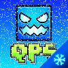

Немного о QGDPS:
Креаторство
---- Rate ---- Уровень должен иметь хороший геймплей. Поддерживаются любые стили уровней. Уровень должен быть не менее 5 секунд. Уровень будет оценивать 1 модератор.
---- Feature ---- В уровне должно быть не менее 800 объектов. Уровень будет оценивать 1 модератор. Уровень должен быть не менее 10 секунд.
---- Epic ---- Уровень должен иметь не менее 1000 объектов, хороший геймплей и приятный для глаз стиль, уровень будет оценивать не 1 модератор, а несколько. Уровень должен быть не менее 20 секунд.
-----------------------------------------
За Rate вы получаете 2 Creator Point
За Feature вы получаете 5 Creator Point
За Epic вы получаете 7 Creator Point
Вперёд к креаторсту!
За Feature вы получаете 5 Creator Point
За Epic вы получаете 7 Creator Point
Вперёд к креаторсту!
За Epic вы получаете 7 Creator Point
Вперёд к креаторсту!
Вперёд к креаторсту!
Как скачать и играть?
Инструкция для Android:
Скачайте файл, установите APK и играйте.Инструкция для Windows: